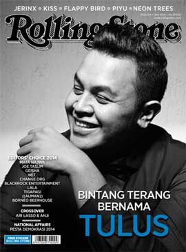

Our Client
Jasa Pengiriman


Social Network


Hot news !
Cover Story: Kisah Panjang Tulus

Saat itu juga baru berselang dua hari setelah Tulus tampil di Java Jazz Festival 2014 di Jakarta. Saya merasakan sendiri hasrat yang keras dari ribuan penonton untuk menyaksikannya.
Matajiwa: Duo Folk Aneh Beramunisi Eksplorasi
“Itu semacam perumpamaan untuk definisi brengsek, tapi kalau brengsek kan masih bisa dipakai dalam hal
Anggota 4Men Wujudkan Mimpi Salah Satu Korban Meninggal Tragedi Sewol
Mencoba untuk melakukan sebisanya, anggota 4Men, Shin Yong Jae akhirnya bisa mewujudkan salah satu mimpi .....